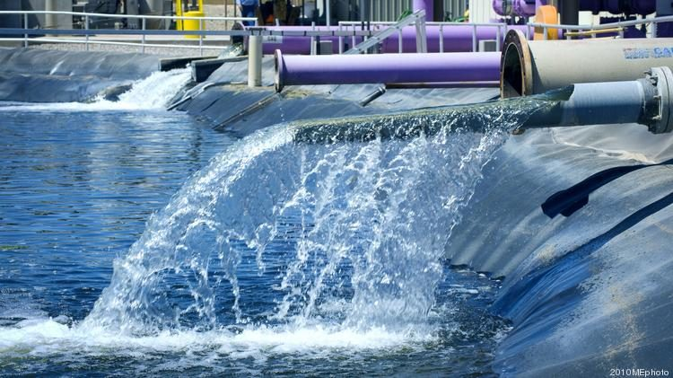
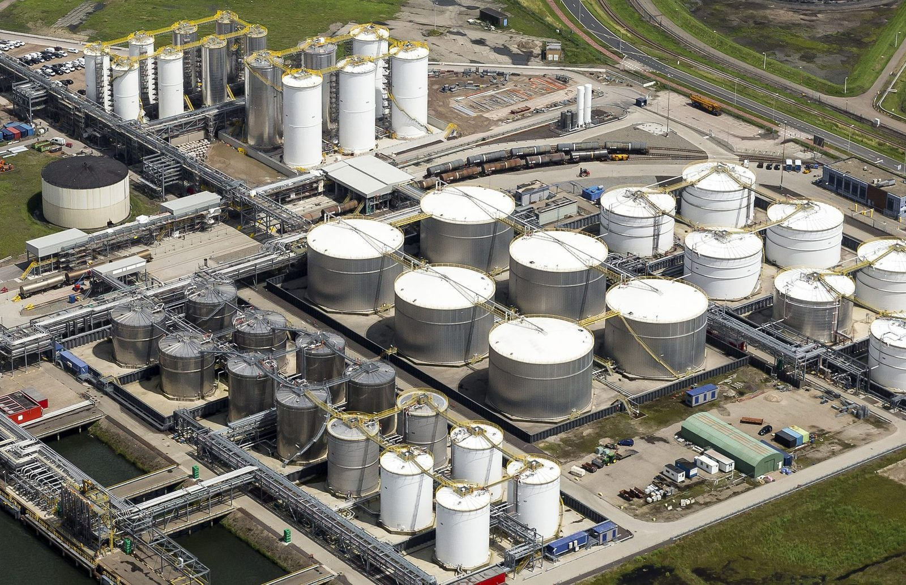

The composite technology we distribute was developed for the industries where pipe and asset failure carries the highest consequence — and is deployed accordingly.
Composite repair technology was pioneered for pipeline and transmission line repair, originally applied as a crack arrestor on high-pressure CO2 lines, enriched natural gas pipelines and other transmission lines prone to long-running cracks.
Verified over a decade-long independent research programme, the technology was the first in the world to meet the effectiveness, durability and performance levels required to qualify as a permanent repair.
Piping integrity within petrochemical plants and refineries is critical to managing process safety, environmental risk and business continuity. Our process piping solutions address the full spectrum of plant and refinery repair conditions, from -46°C to 288°C.
Emergency leak and structural repair products are engineered for unique geometries and complex piping scenarios, including harsh chemical service environments.
Onshore pipelines, gathering lines and industrial piping face corrosion, mechanical damage and ageing infrastructure challenges that demand a repair solution which is fast to deploy and engineered to last.
Composite systems allow onshore operators to restore pipe integrity without full replacement, minimizing downtime and environmental disturbance.
Offshore assets operate in some of the harshest corrosion environments in the industry. Composite repair systems are engineered for use on risers, subsea pipe and platform piping — including systems designed to be installed underwater and in tight-access locations.

Municipal water networks, wastewater treatment infrastructure and sewer force mains benefit from composite repair systems that restore pipe integrity without the cost and disruption of full excavation and replacement.
Tank farms and terminal piping are repaired and reinforced using field-saturated composite systems designed for the range of pressures, temperatures and access constraints found across terminal infrastructure.

For new pipeline construction, composite casing spacers, protective wraps and mechanical support systems protect pipe and coating from damage during and after installation — reducing construction time and long-term corrosion risk.
Tell us about your infrastructure and repair requirement and we'll recommend the right composite solution.